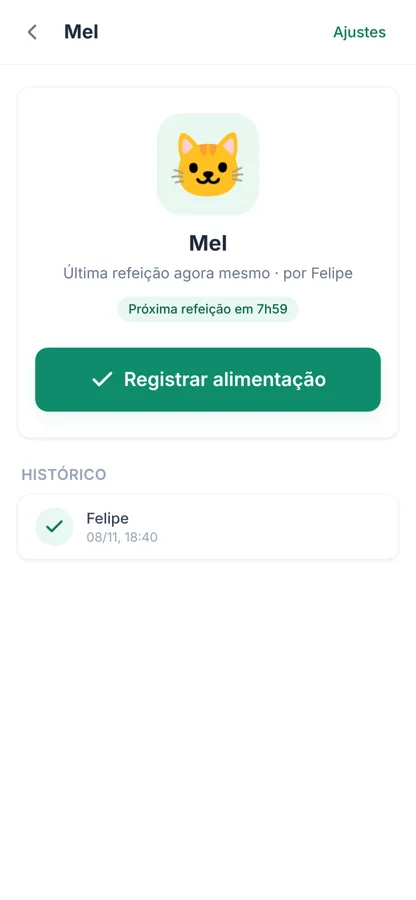

FACAMP
Entrada em Engenharia da Computação. O começo de tudo.
GraduaçãoDeveloper, engineer, project leader. Construo produtos full-stack que vão para produção. Hoje R&D na Motorola, a partir de Americana, SP.


Felipe Furlan —
Entendo o problema antes de escrever a solução. Da liderança no DCE a um sistema que substituiu 400 planilhas na Motorola, construo produtos que pessoas reais usam todos os dias.
Angular, TypeScript, Java, Spring Boot, Python e FastAPI. Visão computacional aplicada à indústria. E gestão de gente e eventos no caminho.
Sobre mimIA e fidelidade no WhatsApp · 60 mil clientes
Institucional · Feira de Carreiras
YOLOv8 · mAP@0.5 de 88,6% · Amanco Wavin
Tigela e Cadê o Carro · PWAs com NFC · React & FastAPI
App · painel · backoffice · Flutter & FastAPI
Também faço sites para outras pessoas




Entrada em Engenharia da Computação. O começo de tudo.
GraduaçãoVice-presidência: 1º Fórum das Engenharias com a 3M, visitas técnicas (XP, Ambev, Agibank, Karcher) e Feira de Carreiras para mais de 1.000 pessoas.
Mar/2023 – Ago/2025Organização geral dos Jogos Universitários: estatutos, regulamentos, segurança e integração entre instituições.
Presidente da comissãoVisão computacional com YOLOv8 para defeitos em peças injetadas: mAP@0.5 de 88,6% e F1 de 0,88.
PesquisadorMapeamento de processos com BPMN e MFV para reduzir lead time e setup.
Parceria acadêmicaPalestra sobre IA + ERP para operações inbound no maior congresso de logística do Brasil.
PalestranteConsolidação de custos na plataforma global de PLCM: 200+ produtos e 400 planilhas viraram um sistema só. Em produção desde ago/2026.
R&D · Angular, Java, BigQueryEntrei na FACAMP em 2022 e, ao longo do curso, liderei iniciativas que conectaram alunos, empresas e profissionais. Essa passagem pela gestão me deu o que uso todo dia como desenvolvedor: entender o problema antes de escrever a solução.
Em 2025 entrei em visão computacional para a indústria, o que me levou ao full-stack na Motorola. Fora disso, triatleta amador: Ironman 70.3 em 2024.